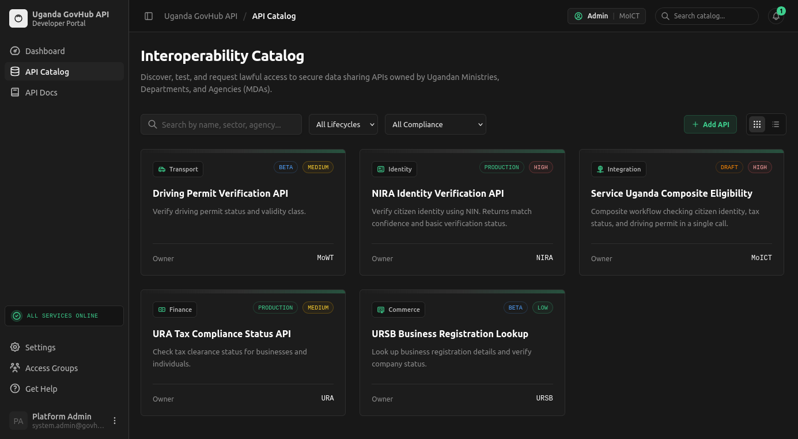
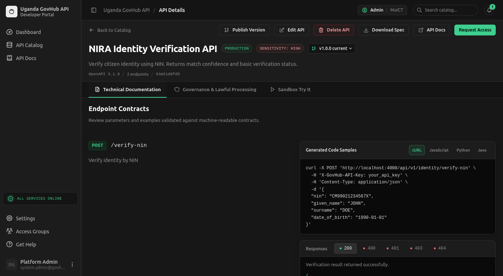
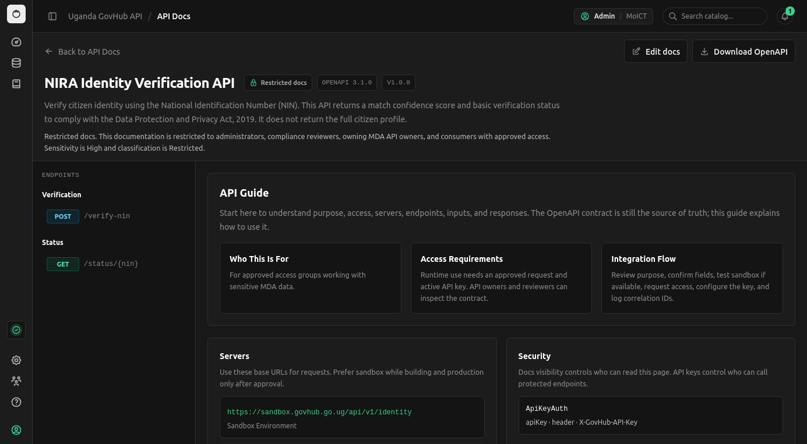
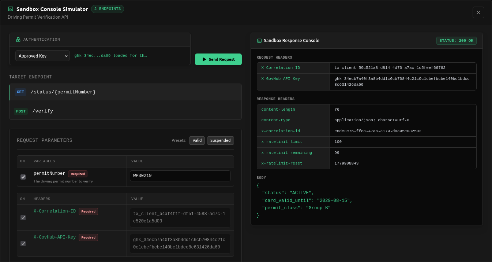
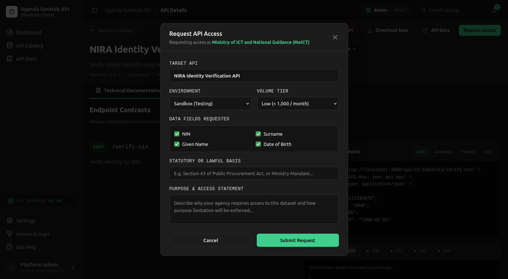
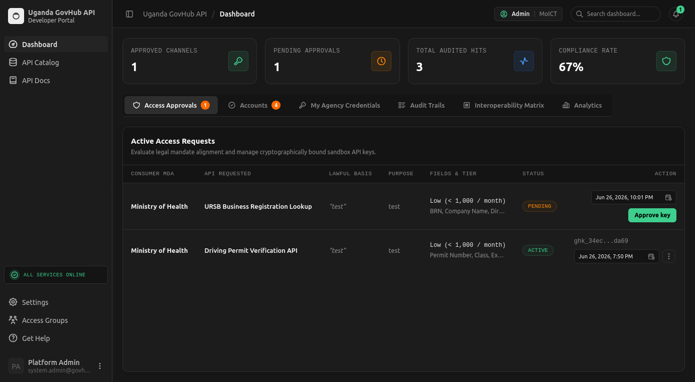
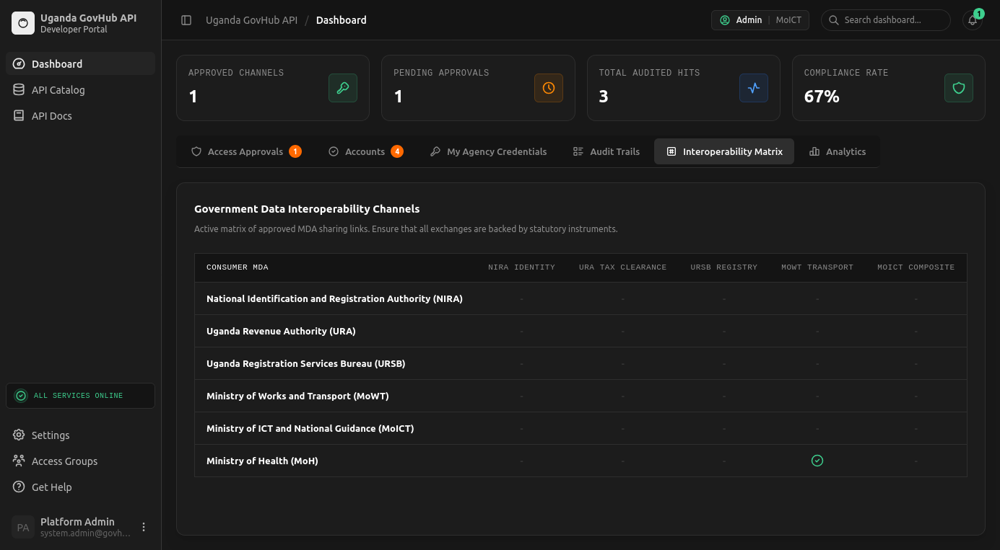
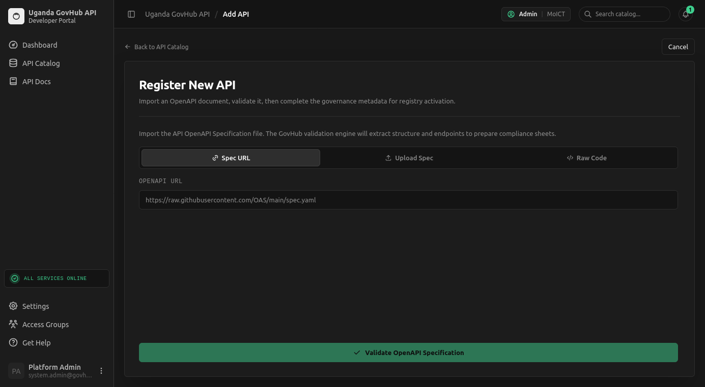
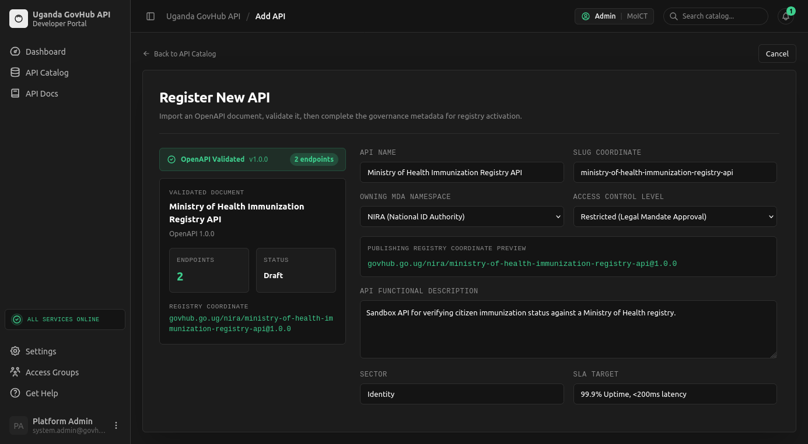
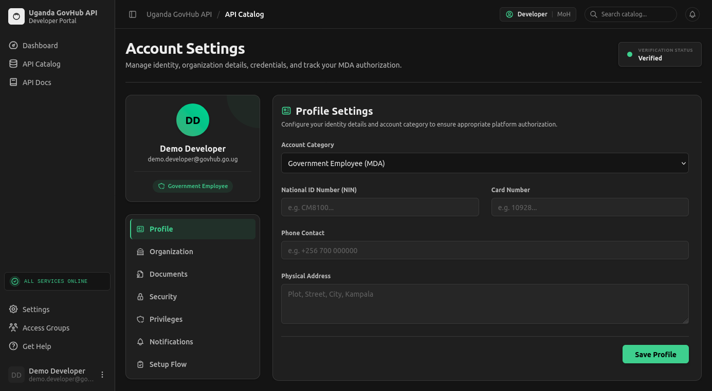

A visual architecture submission showing platform components, data flow, security boundaries, user workflows, API governance, sandbox execution, and production-readiness path for Uganda GovHub API.
Uganda GovHub API is a developer portal, sandbox, and governance console for Ministries, Departments, and Agencies. It demonstrates how government APIs can be discovered, documented, requested, approved, tested, and audited without exposing live citizen records.
The prototype is a local full-stack web application. The frontend is React, TypeScript, Vite, React Router, and GovHub UI components. The backend is Node.js, Express, TypeScript, OpenAPI YAML files, and PostgreSQL through the `pg` driver.
The architecture separates public discovery from operational access. It places policy metadata next to API contracts, requires account and API-level approval, scopes sandbox credentials, and records audit events with correlation IDs.
Users reach the React portal through a browser. The portal calls the Express backend over REST/JSON. PostgreSQL holds application state, OpenAPI files hold machine-readable contracts, and sandbox handlers simulate approved government API calls.
Public visitors, MDA developers, API owners, reviewers, and administrators use browser access over HTTPS/TLS.
React + TypeScript + Vite. Catalog, docs, access request, dashboard, account settings, and Add API workflows.
Node.js + Express + TypeScript. Auth, catalog, docs visibility, approval workflow, sandbox policy, admin actions, audit events.
Users, sessions, MDAs, APIs, versions, access requests, key hashes, audit logs, verification data, and rate limits.
Machine-readable API contracts stored under backend/openapi with version metadata and controlled visibility.
NIRA-style identity, URA-style tax status, URSB business lookup, MoWT permit status, and composite eligibility.
Future approved links to live government systems or national integration infrastructure. The prototype does not connect to live NIRA, URA, URSB, MoWT, NITA-U, or other production systems.
The system presents the main parts in a way a technical evaluation panel can review for fitness, interoperability, security, maintainability, and transferability.
| Component | Implemented design | What it shows for evaluation |
|---|---|---|
| Frontend / user interface | React, TypeScript, Vite, dashboard UI components, API docs pages, account pages, and catalog workflows. | Browser access for public discovery, verified account operations, requests, approvals, audit review, and API onboarding. |
| Backend / application layer | Node.js, Express, TypeScript routes, middleware, policy helpers, OpenAPI validation, docs visibility, access control, audit service, and sandbox handlers. | Business logic is centralized behind REST endpoints with auth, role, visibility, sandbox scope, rate-limit, and audit controls. |
| Database layer | PostgreSQL through `pg`; local demo can run in a postgres:16-alpine container and deployment can use hosted Postgres. | Data categories and relationships are explicit, transferable, and suitable for a production relational database path. |
| Authentication and access | Signup/login, account review states, seeded demo accounts, role-based access, MFA support, bearer sessions, scoped API keys, expiry, revocation, and docs visibility rules. | Public transparency is separated from operational trust; developers, owners, reviewers, and admins have distinct permissions. |
| APIs and integrations | Catalog and docs APIs plus sandbox endpoints for identity, tax, business registration, driving permit, and composite eligibility scenarios. | Documented APIs are exposed; prototype integrations use internal mock handlers only. |
| Security controls | TLS/HSTS hooks, CORS allow-listing, body limits, password hashing, encrypted sensitive fields, key hashing, rate limits, correlation IDs, redacted logs, and structured denial responses. | Security is applied across access, storage, transport, API execution, and audit review. |
The catalog gives MDAs one place to discover API products across agencies, filter by status and compliance, and begin a governed access workflow.

API detail pages place documentation, governance metadata, sandbox access, lifecycle controls, version publishing, and downloadable specifications in one workflow.

Documentation pages explain endpoint purpose, security requirements, server URLs, access requirements, and integration flow while preserving visibility restrictions for sensitive APIs.

The sandbox console demonstrates scoped API key enforcement, approved-key selection, request parameters, response headers, rate-limit metadata, and correlation IDs.

Consumers request API access with explicit purpose, lawful basis, environment, volume tier, and requested data fields so data sharing is reviewable before credentials are issued.

Owners or administrators can review requests, approve scoped keys, set expiry, and manage pending or active access from the operational dashboard.

The matrix gives MoICT and reviewers a ministry-level map of approved data-sharing channels between consuming MDAs and source APIs.

Authorized users can register new APIs by importing OpenAPI specifications from a URL, uploaded file, or raw code before completing governance metadata.

After validation, the registry flow captures owner namespace, access level, functional description, sector, SLA target, and registry coordinate preview.

The account settings surface shows how user identity and MDA authorization are managed before operational API access is granted.

The core flow starts with API discovery and ends with an audited sandbox transaction. Access is explicit, credentials are scoped, and every allowed or denied sandbox call can be traced by correlation ID.
The seeded catalog demonstrates how several MDAs could publish governed, documented services through one discovery and sandbox experience. The implementation uses mock handlers only.
| Owner | API product | Primary interoperability value | Classification |
|---|---|---|---|
| NIRA | Identity Verification | Verify identity match and return the minimum fields needed for a lawful service workflow. | Restricted |
| URA | Tax Compliance Status | Check tax-clearance style status for eligibility, procurement, and compliance workflows. | Official |
| URSB | Business Registration Lookup | Validate business registration facts, current status, and registry details. | Public |
| MoWT | Driving Permit Verification | Confirm permit validity, class authorization, expiry, and suspension state. | Official |
| MoICT | Service Uganda Composite Eligibility | Show multi-agency orchestration using approved sandbox scopes and correlation IDs. | Restricted |
Requests terminate inside the Express backend. Middleware validates key status and scope, then route handlers return deterministic mock responses and structured errors.
A production deployment would connect through approved national integration infrastructure or MDA gateways, with contract testing, adapter services, message signing, monitoring, and data-sharing agreements.
Each API keeps an owning MDA, technical owner, approval authority, statutory basis, purpose limitation, retention class, and audit requirement.
GovHub is positioned as a governed API portal and sandbox layer around MDA-owned services. The production version would preserve agency ownership while standardizing documentation, approval, credential control, monitoring, and audit visibility.
The local prototype is intentionally small, but the architecture identifies where production hardening would be applied: runtime isolation, database hosting, secret management, monitoring, backup, and approved integration channels.
Frontend runs as a Vite React application. Backend runs as an Express service, defaulting to localhost. PostgreSQL and OpenAPI files support the repeatable local demonstration.
Serve static assets behind approved hosting, run backend services in containers or managed application services, use managed PostgreSQL, centralized logs, backups, KMS-backed secrets, and approved integration gateways.
The REST API is stateless apart from database and file-storage dependencies. Multiple backend instances can serve traffic behind a load balancer when shared storage is centralized.
Production should use managed relational storage, backups, disaster recovery, health checks, deployment rollback, and separate secret management.
Move sandbox access toward key rotation, replay protection, stronger signing, centralized logs, monitoring alerts, and tamper-evident audit anchoring where required.
The document explicitly maps system components, user access, storage, security, data flow, APIs, integrations, hosting, and future readiness to the requested architecture submission elements.
| Guidance item | Where it is addressed in this submission |
|---|---|
| Main components | Architecture diagram, component inventory, and platform screenshots show the frontend, backend, PostgreSQL database, OpenAPI storage, sandbox services, and production boundary. |
| Communication and protocols | Browser access, REST/JSON API calls, scoped sandbox key checks, HTTPS/TLS posture, and correlation IDs are described across the architecture and security sections. |
| Data storage and security | PostgreSQL categories, OpenAPI files, encrypted fields, key hashing, rate limits, redaction, and audit logging are covered in the component and data-flow sections. |
| User access | Public visitors, verified developers, API owners, reviewers, administrators, account settings, and account review states are shown in text and screenshots. |
| External integrations | The integration section identifies NIRA-style, URA-style, URSB-style, MoWT-style, and composite sandbox APIs, and clearly states production systems are not called. |
| Hosting and infrastructure | The current local environment is distinguished from the production hardening path: load-balanced services, managed Postgres, secret storage, backups, logs, and monitoring. |
The prototype is not a live national integration platform and does not exchange production citizen data. It is a working architecture model for how MDA APIs can be made discoverable, governed, documented, requestable, testable, and auditable through a common developer portal and sandbox.
The architecture is intentionally transferable: React and TypeScript on the frontend, Node.js and Express on the backend, OpenAPI as the contract format, PostgreSQL for persistence, and standard HTTP security controls for deployment hardening.